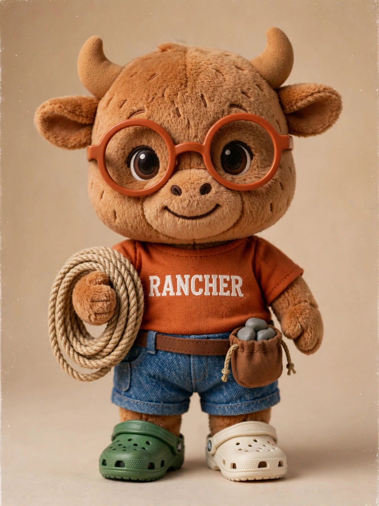
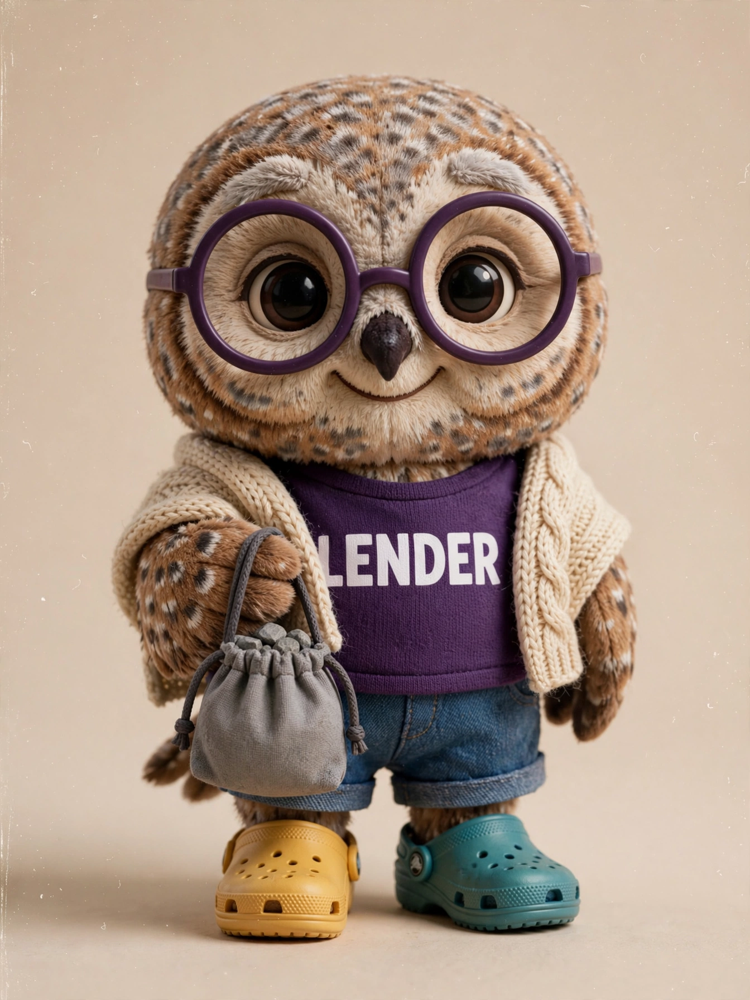
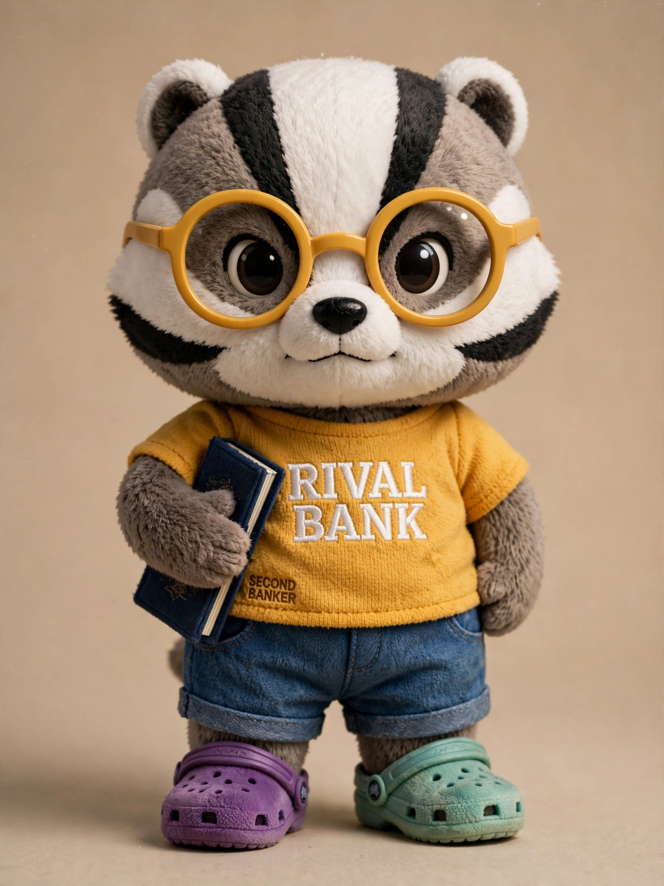
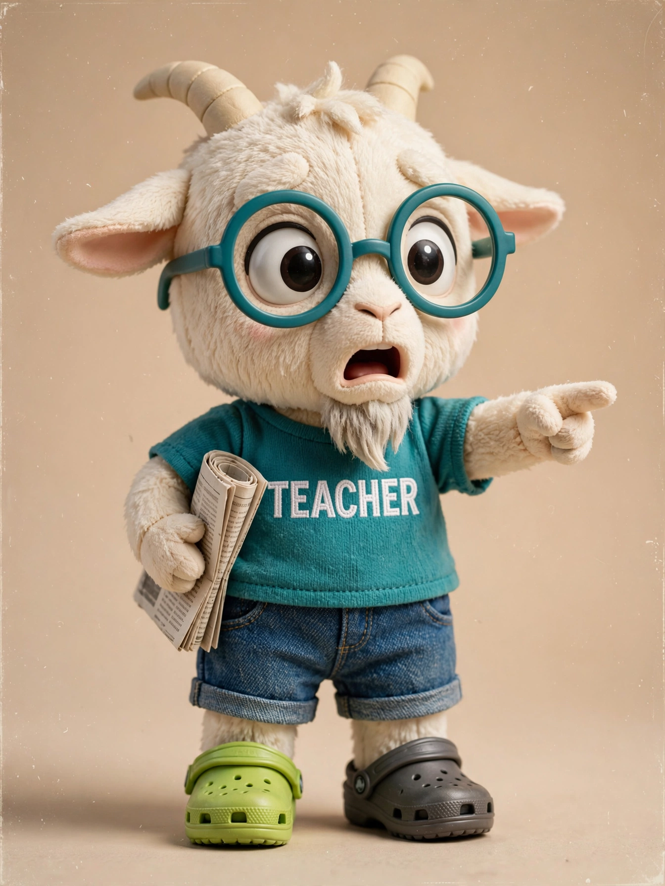
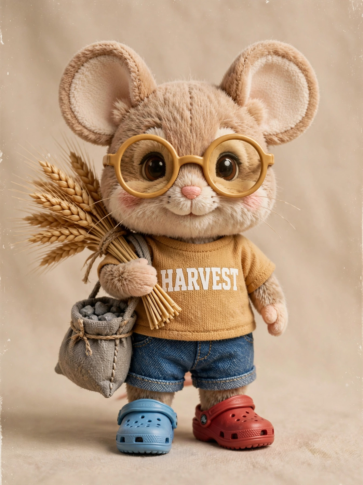
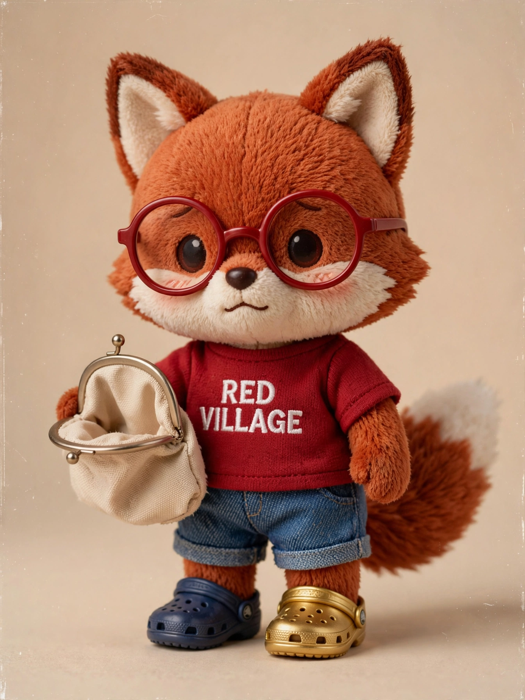
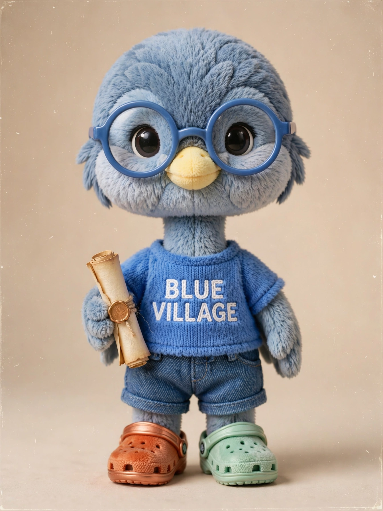
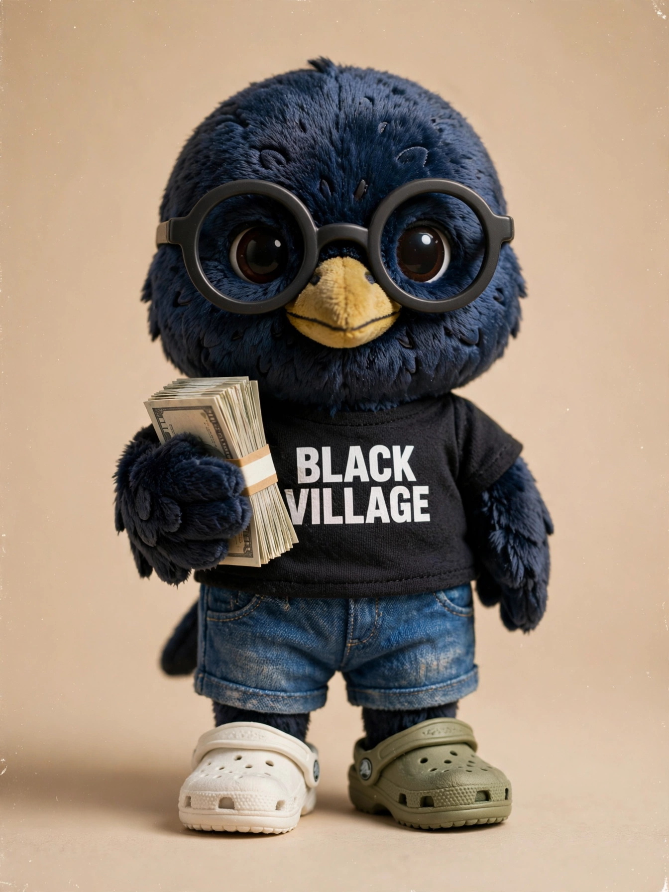

THE STORY · CAST11 original animals
The cast
Villages are told apart by species, not palette. Stones stay gray. Glasses match the shirt, except the raccoon, who keeps rainbow frames.
Raccoonthe banker (his bank stands in for Athena)

Bullthe rancher
Beaverthe shoemaker

Owlthe widow

Badgerthe larger bank (Zeus)

Goatthe teacher

Field mousethe harvest labour
Tortoisethe central bank

Foxthe red-stone village

Heronthe blue-stone village

Crowthe black-stone village